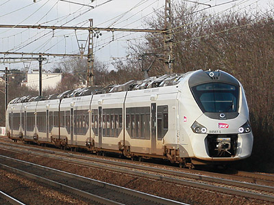

Ferrovia - 26 Avril 2015
B 84500
Regiolis bi-mode régional
Autorails Bimode Diésel / Electrique Bicourant 1,5kV continu - 25 kV 50 Hz.
Quelques données techniques
Constructeur : Alstom
Pour plus d'info :
La fiche B 84500 sur Wikipedia
L'inventaire des B 84500 sur Trains du Sud-Ouest
Les Régiolis sur Trains-Europe.

Le B 84561/62 en provenance de Granville à Meudon (18/01/2015)